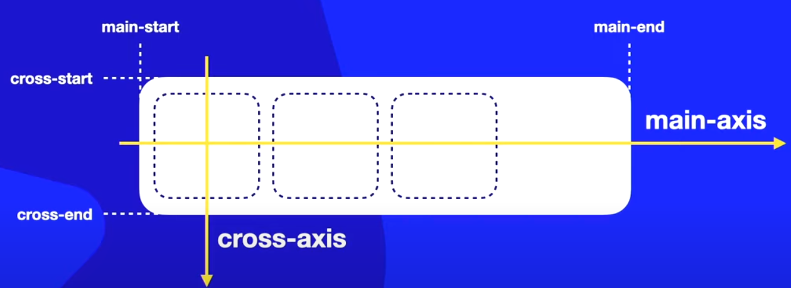
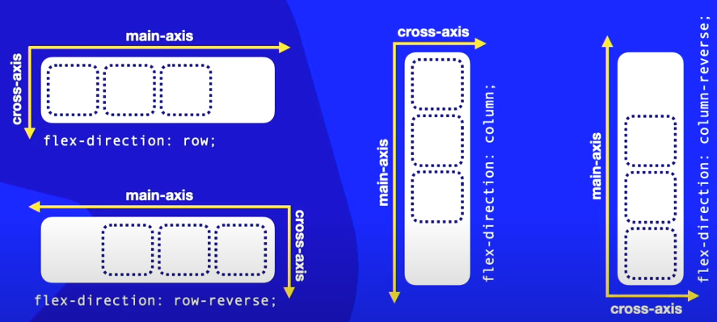
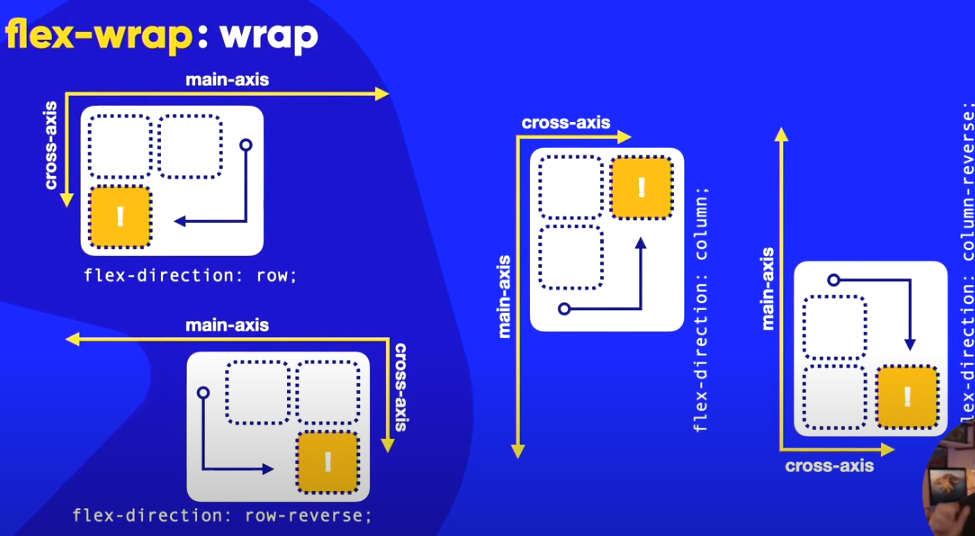
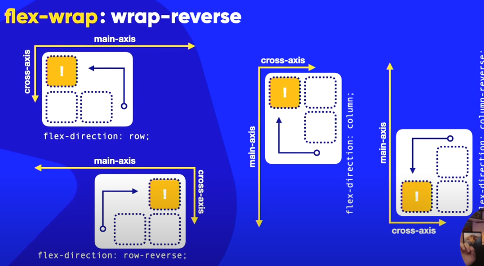
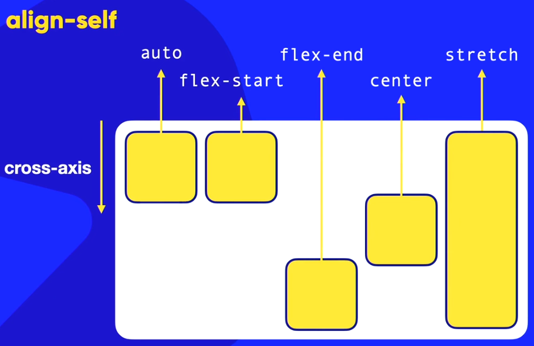

Flexible Box
É um recurso que permite criar contêineres flexíveis, cujos conteúdos se adaptam ao tamanho dos eixos principal e transversal. Isso pode ser feito definindo na CSS do contêiner display: flex e na CSS do item, flex: auto (não deixa espaços em branco no pai). No exemplo abaixo, uma div da classe conteiner, com várias divs da classe item, usando o flexbox básico:
Eixos (axis)
- main-axis - eixo principal
- main-start - início do eixo principal
- main-end - fim do eixo principal
- cross-axis - eixo transversal;
- cross-start - início do eixo transversal;
- cross-end - fim do eixo transversal

Em resumo:

Definições Conteiner - Pai
Flex Direction
- flex-direction: row - elementos aparecem em linha da esquerda para a direita;
- flex-direction: row-reverse - da direita para esquerda;
- flex-direction: column - elementos dispostos de cima para baixo;
- flex-direction: column-reverse - de baixo pra cima
Flex-wrap
- flex-wrap: nowrap - a sequência de itens não é quebrada. Os itens mudam suas dimensões para não aumentar/diminuir o número de linhas/colunas;
- flex-wrap: wrap - quebra a sequência no sentido do eixo transversal. Ou seja, se estiver em row, o item que não cabe vai pra próxima linha abaixo. Se estiver em coluna, o item que não coube vai para a próxima coluna à direita;
- flex-wrape: wrap-reverse - quebra a sequência no sentido inverso ao do eixo transversal.
flex-wrap: wrap

flex-wrap: wrap-reverse

Flex-flow
É um shorthand para agrupar no mesmo campo as definições de flex-direction e flex-wrap. É mais recomendável usar o flex-flow do que as declarações separadas de direction e wrap.
- flex-flow: row nowrap
- flex-flow: row wrap
- flex-flow: row wrap-reverse
- flex-flow: column nowrap .......
Justify-content
Alinha o conteúdo do contêiner em relação ao eixo principal.
- justify-content: flex-start - o primeiro elemento fica junto ao main-start e o espaço em branco, caso haja, do lado do main-end;
- justify-content: flex-end - o último elemento fica junto ao main-end e o espaço em branco, caso haja, do lado do main-start;
- justify-content: center - elementos no centro do eixo principal;
- justify-content: space-betwen - primeiro elemento junto ao main-start, último elemento junto ao main-end e os demais distribuídos no meio com espaços iguais entre eles;
- justify-content: space-evenly - todos elementos com espaços iguais entre eles, incluindo o primeiro e último;
- justify-content: space-around - divide a área do contêiner pelo número de elementos, e cada elemento fica no centro de cada uma dessas divisões.
Align-items
Alinha o conteúdo em relação ao eixo transversal
- Align-items: stretch - estica o elemento de acordo com o tamanho do cross-axis (eixo transversal);
- Align-items: flex-start - o primeiro elemento fica junto ao cross-start e o espaço em branco, caso haja, do lado do cross-end;
- Align-items: flex-end - o último elemento fica junto ao cross-end e o espaço em branco, caso haja, do lado do cross-start;
- Align-items: center - elementos no centro do eixo transversal;
Align-content
Alinha os elementos no eixo transversal (quando estão empacotados). Quando os elementos quebram e se espalham no eixo transversal, o align-content define como eles serão alinhados.
- align-content: stretch - padrão estica cada elemento na medida de cada divisão do eixo;
- align-content: flex-start - alinha os elementos juntos ao cross-start e deixa o espaço em branco junto ao cross-end;
- align-content: flex-end - alinha os elementos junto ao cross-end e deixa o espaço em branco junto ao cross-strat;
- align-content: center - elementos ao centro do cross-axis;
- align-content: space-betwen - primeiros elemento junto ao cross-start, últimos elemento junto ao cross-end e os demais distribuídos no meio com espaços iguais entre eles;
- align-content: space-evenly - todos elementos com espaços iguais entre eles, incluindo o primeiro e último;
- align-content: space-around - divide a área do contêiner pelo número de elementos, e cada elemento fica no centro de cada uma dessas divisões.
Definições Conteúdo - Filhos
Order
É um parâmetro CSS que pode ser definido para cada item dentro do contêiner flex. Ele assume um valor numérico, e pelo seu valor, os itens são ordenados pela ordem crescente dos números dentro do contêiner. Isso pode ser feito de duas formas, definindo inline o parâmetro order:
div style="order: -2;">A
div style="order: 5;">B
div style="order: 0;">C
ou criando uma id para cada elemento e definindo seu parâmetro order na tag style:
div id="itemA">A
div id="itemB">B
div id="itemC">C
style>
div#itemA{
order: 3;
}
div#itemB{
order: 0;
}
div#itemC{
order: 2;
}
style>
Align-self
Define o alinhamento do próprio item (e não de todos eles), em relação ao eixo transversal.
- auto / inherit: ele herda o alinhamento (align-content ou align-items) do pai;
- flex-start: alinhamento no cros start;
- flex-end: alinhamento no cross-end;
- center: alinhamento ao centro do cross-axis;
- stretch: estica o conteúdo em relação ao cross-axis.

Flex-basis
Define o alinhamento do próprio item (e não de todos eles) em relação ao eixo principal.
- auto: largura do item é dada pelo tamanho de seu conteúdo;
- Xpx: largura do item é de Xpx, mas a depender do conteúdo, se não couber dentro do contêiner todos itens com a medida Xpx, cada elemento é diminuído até o mínimo possível;